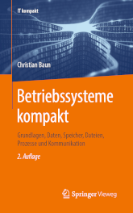
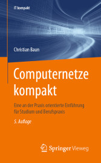

|
|
|


|
Die Hauptaufgabe eines Betriebssystems ist die Steuerung und Verwaltung der Betriebsmittel eines Rechnersystems sowie die Verteilung dieser Ressourcen an die Benutzer. Zu den Betriebsmitteln gehören Prozessoren, Hauptspeicher, Dateien, Ein-/Ausgabegeräte und Netzwerkdienste und generell alle Ressourcen, die mit dem Rechnersystem verbunden sind. Zusätzlich stellt ein Betriebssystem die Benutzerschnittstelle zur Steuerung des Systems sowie Schutzmechanismen, Werkzeuge, Bibliotheken und Entwicklungswerkzeuge bereit. Rechnernetze ermöglichen den Zusammenschluss eigenständiger Computersysteme zur Kommunikation und gemeinsamen Nutzung von Ressourcen. Die Kommunikation in Computernetzen erfolgt über verschiedene Protokolle, die über verschiedene Schichtenmodelle (OSI-Referenzmodell, TCP/IP-Referenzmodell, hybrides Modell) strukturiert werden können. Das Ziel dieser Vorlesung ist die Vermittlung der Grundlagen, Prinzipien, Probleme, und Lösungen, kurz gesagt der Konzepte auf denen die klassischen und modernen Betriebssysteme basieren. Zudem findet eine Einführung in die Grundlagen der Rechnernetze statt. Abschließend wird eine Auswahl bekannter Protokollen und ihre Klassifikation in die etablierten Referenzmodelle besprochen. Der Schwerpunkt des Themenbereichs Rechnernetze ist die Beschreibung des Transports von Daten durch die unterschiedlichen Protokollebenen und Übertragungsmedien. Die komplette Vorlesung (inkl. Übungen und Klausur) findet in deutscher Sprache statt. Die Betreuung der Übungen und die Abnahme von Werkstück A geschieht im SS2021 in Zusammenarbeit mit Anton Rösler anton.roesler@fb2.fra-uas.de und Leonard Hußke leonard.husske@stud.fra-uas.de Die Vorlesungsunterlagen zum Teil Betriebssysteme basieren auf der 2. Auflage des Buches Betriebssysteme kompakt (ISBN: 978-3-662-61410-5), das im Juni 2020 bei Springer Vieweg erschienen ist. Die Vorlesungsunterlagen zum Teil Computernetze basieren auf der 5. Auflage des Buches Computernetze kompakt (ISBN: 978-3-662-59896-2), das im Herbst 2019 bei Springer Vieweg erschienen ist. |
|
Für die Abgabe von Werkstück A ist es ausreichend (und empfehlenswert) wenn Sie die Dokumentation und die Präsentation (beides als PDF!) in ihr Quellcode-Repository legen (z.B. GitHub) und den Link an Herrn Rösler, Herrn Hußke und mich per Email schicken. Wenn Sie die Präsentation bis zum 28.6.2021 noch nicht final haben ist das egal. Die Dokumentation und der Quellcode müssen bis zum 28.6.2021 aber final sein. |
|
Das Passwort zu allen -Videokonferenzen ist: BSRN2021 |
|
| Datum | Zeit | Raum | Veranstaltung | Aufnahme | Inhalte |
|---|---|---|---|---|---|
| 14.04.2021 | 08:30-10:00 | Vorlesung | Aufnahme | Besprechung von Foliensatz 1 (Folie 1-32) | |
| 21.04.2021 | 08:30-10:00 | Vorlesung | Aufnahme | Besprechung von Foliensatz 1 (Folie 33-38) + Foliensatz 2 (Folie 1-18) | |
| 28.04.2021 | 08:30-10:00 | Vorlesung | Aufnahme | Besprechung von Foliensatz 2 (Folie 19-47) | |
| 05.05.2021 | 08:30-10:00 | Vorlesung | Aufnahme | Besprechung von Foliensatz 2 (Folie 48-52) + Foliensatz 3 (Folie 1-22) | |
| 12.05.2021 | 08:30-10:00 | Vorlesung | Aufnahme | Besprechung von Foliensatz 3 (Folie 23-40) + Foliensatz 4 (Folie 1-11) | |
| 19.05.2021 | 08:30-10:00 | Vorlesung | Aufnahme | Besprechung von Foliensatz 4 (Folie 12-49) | |
| 26.05.2021 | 08:30-10:00 | Vorlesung | Aufnahme | Besprechung von Foliensatz 5 (Folie 1-23) + Foliensatz 6 (Folie 1-17) | |
| 02.06.2021 | 08:30-10:00 | Vorlesung | Aufnahme | Besprechung von Foliensatz 6 (Folie 18-63) | |
| 09.06.2021 | 08:30-10:00 | Vorlesung | Aufnahme | Besprechung von Foliensatz 7 (Folie 1-28) | |
| 18.06.2021 | 08:30-10:00 | Vorlesung | Aufnahme | Besprechung von Foliensatz 8 (Folie 1-22) + Foliensatz 9 (Folie 1-5) | |
| 23.06.2021 | 08:30-10:00 | Vorlesung | Aufnahme | Besprechung von Foliensatz 9 (Folie 6-37) | |
| 28.06.2021 | ----- | ----- | ----- | Frist (Deadline) zur Abgabe der Dokumentation und des Quellcodes als ZIP-Archiv von Werkstück A der Portfolioprüfung | |
| 30.06.2021 | 08:30-10:00 | Vorlesung | Besprechung von Foliensatz 10 (Folie 1-?) | ||
| 07.07.2021 | 08:30-10:00 | Vorlesung | |||
| 14.07.2021 | 08:30-10:00 | Vorlesung | Fragestunde | ||
| 21.07.2021 | ??:??-??:?? | ??? | Klausur | Die Klausur deckt alle besprochenen Foliensätze und Übungsblätter ab |
| Foliensätze | Übungsblätter | Lösungen | Themen |
|---|---|---|---|
| Foliensatz 1 | Übungsblatt 1 | Lösung | Organisatorisches, Literatur, Generationen von Computersystemen und Betriebssystemen, Klassifikationen, Einzelprogrammbetrieb, Mehrprogrammbetrieb, Einzelbenutzerbetrieb, Mehrbenutzerbetrieb, Kernelarchitekturen |
| Foliensatz 2 | Übungsblatt 2 | Lösung | Speicher, Speicherhierarchie, Ersetzungsstrategien, Speicherverwaltung, Real Mode, Protected Mode, virtueller Speicher |
| Foliensatz 3 | Übungsblatt 3 | Lösung | Dateien, Dateisysteme, Verzeichnisse, Blockadressierung, Journaling, Extents |
| Foliensatz 4 | Übungsblatt 4 | Lösung | Prozesse, Prozesskontext, Zustands-Prozessmodelle, Prozessverwaltung, Prozesse erzeugen und löschen, Systemaufrufe |
| Foliensatz 5 | Übungsblatt 5 | Lösung | Unterbrechungen, Dispatcher, Scheduling-Verfahren |
| Foliensatz 6 | Übungsblatt 6 | Lösung | Prozessinteraktion, Synchronisation von Prozessen, Kommunikation zwischen Prozessen, Kooperation von Prozessen |
| --- | --- | --- | Beispiel zu gemeinsamen Speichersegmenten (Shared Memory Segments) |
| --- | --- | --- | Beispiel zu Nachrichtenwarteschlangen (Message Queues) |
| --- | --- | --- | Beispiel zu anonymen Pipes |
| --- | --- | --- | Beispiel zu benannten Pipes |
| --- | --- | --- | Beispiel zu TCP-Sockets (Server) |
| --- | --- | --- | Beispiel zu TCP-Sockets (Client) |
| Foliensatz 7 | Übungsblatt 7 | Lösung | Grundlagen der Computervernetzung, Protokolle und Referenzmodelle |
| Foliensatz 8 | Übungsblatt 8 | Lösung | Bitübertragungsschicht - Physical Layer |
| Foliensatz 9 | Übungsblatt 9 | Lösung | Sicherungsschicht - Data Link Layer |
| Foliensatz 10 | Übungsblatt 10 | Lösung | Vermittlungsschicht - Network Layer |
| Foliensatz 11 | Übungsblatt 11 | Lösung | Transportschicht - Transport Layer |
| Foliensatz 12 | Übungsblatt 12 | Lösung | Anwendungsschicht - Application Layer |
Sie müssen EINE Aufgabe bis zum Ende des Semesters erfolgreich bearbeiten (inkl. schriftlicher Ausarbeitung, Abnahme und Präsentation)!
| Werkstück A | Maximale Gruppengröße | Themengebiet | Erlaubte Programmiersprachen |
|---|---|---|---|
| Alternative 1 | 3 Personen | Interprozesskommunikation (siehe Foliensatz 6) | C, Python |
| Alternative 2 | 3 Personen | Buzzword-Bingo | Bash, C, Python |
| Alternative 3 | 3 Personen | Schiffe-Versenken | Bash, C, Python |
| Alternative 4 | 3 Personen | Passwort-Manager | Bash, C, Python |
| Alternative 5 | 3 Personen | Sudoku | Bash |
| Alternative 6 | 3 Personen | Dynamische Partitionierung (siehe Foliensatz 2) | Bash |
| Alternative 7 | 3 Personen | Labyrinth (Maze) | Bash, C, Python |
Eine Vorlage (ZIP, PDF) für die Ausarbeitung von Werkstück A ist verfügbar. Die Vorlage nutzt das LaTeX-Makropaket lncs (Lecture Notes in Computer Science) des Springer-Verlags. Henry Cocos hat eine sehr schöne LaTeX-Vorlage für Präsentationsfolien mit LaTeX-Beamer erstellt.
Die Verwendung dieser Vorlagen ist nicht zwingend erforderlich. Es ist aber eine gute Gelegenheit, die Erstellung optisch ansprechender Dokumentationen und Präsentationen zu erlernen. Alle großen Linux-Distributionen bringen LaTeX-Pakete mit. Es gibt schier endlos viel Literatur und Tutorials für den Einstieg in LaTeX. Ein kostenfrei verfügbares eBook, das auch im Quellcode vorliegt, ist Ein Einstieg in LaTeX (GitHub).
Unter Windows sind die LaTeX-Distributionen MiKTeX und TeX Live bekannt. Für Mac OS gibt es MacTeX. LaTeX-Dokumente können mit jedem Editor bearbeitet werden.
Diese Dokumentation sind ein guter Einstieg, wenn Sie wenig oder gar kein Vorwissen zu den Themengebieten Linux-Systemadministration und Shell-Programmierung haben. Diese Dokumentation ist nicht klausurrelevant.
| Linux und Shell-Programmierung - Teil 1 | Organisatorisches, Einführung, Hilfesystem, Verzeichnisse, Dateien |
| Linux und Shell-Programmierung - Teil 2 | Systemverwaltung, Zugriffsrechte, Verweise, Dateien durchsuchen, Editoren, Prozesse |
| Linux und Shell-Programmierung - Teil 3 | Datum und Uhrzeit, Ein-/Ausgaben umleiten, Zeichen zählen, Alias, Dateien suchen, Kommandos zeitsteuern |
| Linux und Shell-Programmierung - Teil 4 | Ressourcen überwachen, Sortieren, Umgebungsvariablen, Textausgaben, Mustervergleiche, Texte auswerten |
| Linux und Shell-Programmierung - Teil 5 | Grundlagen der Shell und von Shell-Skripten, Vergleichsoperationel, Kontrollstrukturen, Schleifen |
| Linux und Shell-Programmierung - Teil 6 | Arithmetik auswerten, Funktionen, Funktionsbibliotheken, Auswahlmenüs |
Da Werkstück A der Portfolioprüfung schon eine praktische Leistung ist, wird Werkstück B (die Klausur über 60 Minuten) im SS2021 keine praktischen Aufgaben enthalten. Konzentrieren Sie sich bei der Vorbereitung auf die Klausur ganz auf die theoretischen Aufgaben in den Übungsblättern.
| Semester | Klausuren | Bearbeitungszeit | Lösungen |
|---|---|---|---|
| SS2020 | Klausur | 60 Minutes | Musterlösung |
| SS2019 | Klausur | 60 Minuten | Musterlösung |
| SS2018 | Klausur | 60 Minuten | Musterlösung |
| SS2017 | Klausur | 60 Minuten | Musterlösung |
| SS2016 | Klausur | 60 Minuten | Musterlösung |
Zu erreichen bin ich am besten per E-Mail: christianbaun@fb2.fra-uas.de
Die Betreuung der Übungen und die Abnahme von Werkstück A geschieht im SS2021 in Zusammenarbeit mit Anton Rösler anton.roesler@fb2.fra-uas.de und Leonard Hußke leonard.husske@fb2.fra-uas.de
|
Prof. Dr. Christian Baun Frankfurt University of Applied Sciences (1971-2014: Fachhochschule Frankfurt am Main) FB 2: Informatik und Ingenieurwissenschaften Stand: 23.6.2021 |
|